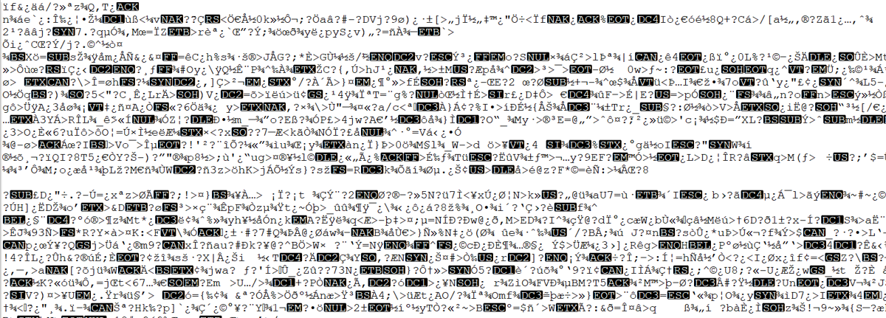

11. Fichiers IQ et SigMF¶
Dans tous nos exemples Python précédents, nous avons stocké les signaux sous forme de tableaux NumPy 1D de type “flottants complexes”. Dans ce chapitre, nous apprenons comment les signaux peuvent être stockés dans un fichier, puis relus dans Python, et nous présentons la norme SigMF. Le stockage des données de signaux dans un fichier est extrêmement utile ; vous pouvez souhaiter enregistrer un signal dans un fichier afin de l’analyser manuellement hors ligne, de le partager avec un collègue ou de constituer un ensemble de données complet.
Fichiers binaires¶
Rappelons qu’un signal numérique en bande de base est une séquence de nombres complexes.
Exemple : [0.123 + j0.512, 0.0312 + j0.4123, 0.1423 + j0.06512, …]
Ces nombres correspondent à [I+jQ, I+jQ, I+jQ, I+jQ, I+jQ, I+jQ, I+jQ, I+jQ, …].
Lorsque nous voulons enregistrer des nombres complexes dans un fichier, nous les enregistrons au format IQIQIQIQIQIQIQIQ. C’est-à-dire que nous stockons un tas de flottants dans une rangée, et lorsque nous les relisons, nous devons les séparer en [I+jQ, I+jQ, …].
Bien qu’il soit possible de stocker les nombres complexes dans un fichier texte ou un fichier csv, nous préférons les enregistrer dans ce que l’on appelle un “fichier binaire” pour gagner de l’espace. À des taux d’échantillonnage élevés, vos enregistrements de signaux peuvent facilement atteindre plusieurs Go, et nous voulons être aussi économes en mémoire que possible. Si vous avez déjà ouvert un fichier dans un éditeur de texte et qu’il semblait incompréhensible comme la capture d’écran ci-dessous, il s’agissait probablement d’un fichier binaire. Les fichiers binaires contiennent une série d’octets, et vous devez garder la trace du format vous-même. Les fichiers binaires sont le moyen le plus efficace de stocker des données, en supposant que toutes les compressions possibles ont été effectuées. Étant donné que nos signaux ressemblent généralement à une séquence aléatoire de flottants, nous n’essayons généralement pas de compresser les données. Les fichiers binaires sont utilisés pour beaucoup d’autres choses, par exemple pour les programmes compilés (appelés “binaires”). Lorsqu’ils sont utilisés pour enregistrer des signaux, nous les appelons “fichiers IQ” binaires, en utilisant l’extension de fichier .iq.
{kind=link}
En Python, le type complexe par défaut est np.complex128, qui utilise deux flottants de 64 bits par échantillon. Mais en DSP/SDR, nous avons tendance à utiliser des flottants de 32 bits à la place, car les ADC de nos SDR n’ont pas tant de précision que cela pour justifier des flottants de 64 bits. En Python, nous utiliserons np.complex64, qui utilise deux flottants de 32 bits. Lorsque vous traitez simplement un signal en Python, cela n’a pas vraiment d’importance, mais lorsque vous allez enregistrer le tableau 1d dans un fichier, vous voulez d’abord vous assurer qu’il s’agit d’un tableau de np.complex64.
Exemples Python¶
En Python, et spécifiquement en numpy, nous utilisons la fonction tofile() pour enregistrer un tableau numpy dans un fichier. Voici un court exemple de création d’un simple signal BPSK plus du bruit et de son enregistrement dans un fichier dans le même répertoire que celui à partir duquel nous avons exécuté notre script :
.. code-block:: python
import numpy as np import matplotlib.pyplot as plt
num_symbols = 10000
x_symbols = np.random.randint(0, 2, num_symbols)*2-1 # -1 et 1 n = (np.random.randn(num_symbols) + 1j*np.random.randn(num_symbols))/np.sqrt(2) # AWGN de puissance unitaire r = x_symbols + n * np.sqrt(0.01) # puissance du bruit de 0.01 print(r) plt.plot(np.real(r), np.imag(r), ‘.’) plt.grid(True) plt.show()
# Sauvegarder le fichier IQ print(type(r[0])) # Vérifier le type de données. Oups, c’est 128 et non 64 ! r = r.astype(np.complex64) # Convertir en64 print(type(r[0])) # Verifier que c’est bien 64 r.tofile(‘bpsk_in_noise.iq’) # Sauvegarder le fichier
Maintenant, examinez les détails du fichier produit et vérifiez combien d’octets il contient. Ce devrait être num_symbols * 8 parce que nous avons utilisé np.complex64, ce qui représente 8 octets par échantillon, 4 octets par flottant (2 flottants par échantillon).
En utilisant un nouveau script Python, nous pouvons lire ce fichier en utilisant np.fromfile(), comme ceci :
import numpy as np
import matplotlib.pyplot as plt
samples = np.fromfile('bpsk_in_noise.iq', np.complex64) # Lire dans le fichier. Nous devons lui dire quel est son format
print(samples)
# Tracez la constellation pour vous assurer qu'elle est correcte
plt.plot(np.real(samples), np.imag(samples), '.')
plt.grid(True)
plt.show()
Une grosse erreur est d’oublier d’indiquer à np.fromfile() le format du fichier. Les fichiers binaires n’incluent aucune information sur leur format. Par défaut, np.fromfile() suppose qu’il lit un tableau de float64s.
La plupart des autres langages ont des méthodes pour lire les fichiers binaires, par exemple, dans MATLAB vous pouvez utiliser fread(). Pour l’analyse visuelle d’un fichier RF, voir la section ci-dessous.
Si vous vous retrouvez un jour à traiter des int16 (alias ints courts), ou tout autre type de données pour lequel numpy n’a pas d’équivalent complexe, vous serez obligé de lire les échantillons en tant que réels, même s’ils sont en fait complexes. L’astuce est de les lire en tant que réels, mais ensuite de les entrelacer dans le format IQIQIQ… vous-même, quelques manières différentes de le faire sont montrées ci-dessous :
samples = np.fromfile('iq_samples_as_int16.iq', np.int16).astype(np.float32).view(np.complex64)
or
samples = np.fromfile('iq_samples_as_int16.iq', np.int16)
samples /= 32768 # convertir en -1 en +1 (facultatif)
samples = samples[::2] + 1j*samples[1::2] # convertir en IQIQIQ...
Analyse visuelle d’un fichier RF¶
Bien que nous ayons appris à créer notre propre tracé de spectrogramme dans le chapitre Het Frequentiedomein, rien ne vaut l’utilisation d’un logiciel déjà créé, et quand il s’agit d’analyser un long enregistrement RF, je recommande d’utiliser inspectrum. Inspectrum est un outil graphique assez simple mais puissant pour balayer visuellement un fichier RF, avec un contrôle fin sur la gamme de cartes de couleurs et la taille de la FFT (quantité de zoom). Vous pouvez maintenir la touche alt et utiliser la molette de défilement pour vous déplacer dans le temps. Il dispose de curseurs optionnels pour mesurer le delta-temps entre deux rafales d’énergie, et la possibilité d’exporter une tranche du fichier RF dans un nouveau fichier. Pour l’installation sur des plateformes basées sur Debian comme Ubuntu, utilisez les commandes suivantes :
sudo apt-get install qt5-default libfftw3-dev cmake pkg-config libliquid-dev
git clone https://github.com/miek/inspectrum.git
cd inspectrum
mkdir build
cd build
cmake ..
make
sudo make install
inspectrum
{kind=link}
Valeurs maximales et saturation¶
Lorsque vous recevez des échantillons d’un SDR, il est important de connaître la valeur maximale de l’échantillon. De nombreux SDR émettent les échantillons sous forme de flottants avec une valeur maximale de 1.0 et une valeur minimale de -1.0. D’autres SDR vous donneront des échantillons sous forme d’entiers, généralement 16 bits, auquel cas les valeurs max et min seront +32767 et -32768 (sauf indication contraire), et vous pouvez choisir de diviser par 32 768 pour les convertir en flottants de -1,0 à 1,0. La raison pour laquelle il faut connaître la valeur maximale de votre SDR est due à la saturation : lors de la réception d’un signal extrêmement fort (ou si le gain est réglé trop haut), le récepteur va “saturer” et il va tronquer les valeurs élevées à la valeur maximale de l’échantillon. Les ADCs de nos SDRs ont un nombre limité de bits. Lorsque vous créez une application SDR, il est sage de toujours vérifier la saturation, et lorsque cela se produit, vous devez l’indiquer d’une manière ou d’une autre. Un signal qui est saturé aura l’air perturbé dans le domaine temporel, comme ceci :

En raison des changements soudains dans le domaine temporel, dus à la troncature, le domaine fréquentiel peut sembler étalé. En d’autres termes, le domaine des fréquences comprendra de fausses caractéristiques, des caractéristiques résultant de la saturation et ne faisant pas réellement partie du signal, ce qui peut déconcerter les gens lors de l’analyse d’un signal.
SigMF et l’annotation des fichiers IQ¶
Comme le fichier IQ lui-même n’est associé à aucune métadonnée, il est courant d’avoir un second fichier contenant des informations sur le signal, portant le même nom de fichier mais une extension .txt ou autre. Ces informations devraient au minimum inclure la fréquence d’échantillonnage utilisée pour collecter le signal, et la fréquence sur laquelle le SDR était accordé. Après l’analyse du signal, le fichier de métadonnées peut inclure des informations sur les plages d’échantillonnage des caractéristiques intéressantes, telles que les rafales d’énergie. L’index d’échantillon est simplement un nombre entier qui commence à 0 et s’incrémente à chaque échantillon complexe. Si vous savez qu’il y a de l’énergie entre les échantillons 492342 et 528492, vous pouvez lire le fichier et extraire cette partie du tableau : samples[492342:528493].
Heureusement, il existe désormais une norme ouverte qui spécifie un format de métadonnées utilisé pour décrire les enregistrements de signaux, connue sous le nom de SigMF. En utilisant une norme ouverte comme SigMF, de multiples parties peuvent partager des enregistrements RF plus facilement, et utiliser différents outils pour opérer sur les mêmes ensembles de données. Cela permet également d’éviter le “bitrot” des ensembles de données RF où les détails de la capture sont perdus au fil du temps en raison de détails de l’enregistrement qui ne sont pas colocalisés avec l’enregistrement lui-même. La façon la plus simple (et minimale) d’utiliser le standard SigMF pour décrire un fichier IQ binaire que vous avez créé est de renommer le fichier .iq en .sigmf-data et de créer un nouveau fichier avec le même nom mais l’extension .sigmf-meta, et de s’assurer que le champ datatype dans le méta-fichier correspond au format binaire de votre fichier de données. Ce fichier méta est un fichier en texte clair rempli de json, vous pouvez donc simplement l’ouvrir avec un éditeur de texte et le remplir manuellement (nous verrons plus tard comment le faire de manière automatique). Voici un exemple de fichier .sigmf-meta que vous pouvez utiliser comme modèle :
{
"global": {
"core:datatype": "cf32_le",
"core:sample_rate": 1000000,
"core:hw": "PlutoSDR with 915 MHz whip antenna",
"core:author": "Art Vandelay",
"core:version": "1.0.0"
},
"captures": [
{
"core:sample_start": 0,
"core:frequency": 915000000
}
],
"annotations": []
}
Notez que core:cf32_le indique que votre fichier .sigmf-data est de type IQIQIQIQ… avec des flottants 32 bits, c’est-à-dire np.complex64 comme nous l’avons utilisé précédemment. Référez-vous aux spécifications pour les autres types de données disponibles, par exemple si vous avez des données réelles au lieu de complexes, ou si vous utilisez des entiers 16 bits au lieu de flottants pour gagner de la place.
En dehors du type de données, les lignes les plus importantes à remplir sont core:sample_rate et core:frequency. Il est bon de saisir également des informations sur le matériel (core:hw) utilisé pour capturer l’enregistrement, comme le type de SDR et l’antenne, ainsi qu’une description de ce que l’on sait du ou des signaux dans l’enregistrement dans core:description. Le core:version est simplement la version de la norme SigMF utilisée au moment de la création du fichier de métadonnées.
Si vous capturez votre enregistrement RF à partir de Python, par exemple en utilisant l’API Python pour votre SDR, vous pouvez éviter de devoir créer manuellement ces fichiers de métadonnées en utilisant le paquetage SigMF Python. Celui-ci peut être installé sur un système d’exploitation basé sur Ubuntu/Debian comme suit :
cd ~
git clone https://github.com/gnuradio/SigMF.git
cd SigMF
sudo pip install .
Le code Python permettant d’écrire le fichier .sigmf-meta pour l’exemple du début de ce chapitre, où nous avons enregistré bpsk_in_noise.iq, est présenté ci-dessous :
import numpy as np
import datetime as dt
from sigmf import SigMFFile
# <code pour exemple>
# r.tofile('bpsk_in_noise.iq')
r.tofile('bpsk_in_noise.sigmf-data') # remplacer la ligne ci-dessus par celle-ci
# crérer les metadata
meta = SigMFFile(
data_file='example.sigmf-data', # extension optionalle
global_info = {
SigMFFile.DATATYPE_KEY: 'cf32_le',
SigMFFile.SAMPLE_RATE_KEY: 8000000,
SigMFFile.AUTHOR_KEY: 'Your name and/or email',
SigMFFile.DESCRIPTION_KEY: 'Simulation of BPSK with noise',
SigMFFile.VERSION_KEY: sigmf.__version__,
}
)
# créer une clé de capture à l'index temporel 0
meta.add_capture(0, metadata={
SigMFFile.FREQUENCY_KEY: 915000000,
SigMFFile.DATETIME_KEY: dt.datetime.utcnow().isoformat()+'Z',
})
# vérifier les erreurs et écrire sur le disque
assert meta.validate()
meta.tofile('bpsk_in_noise.sigmf-meta') # extension optionalle
Remplacez simplement 8000000 et 915000000 par les variables que vous avez utilisées pour stocker respectivement la fréquence d’échantillonnage et la fréquence centrale.
Pour lire un enregistrement SigMF dans Python, utilisez le code suivant. Dans cet exemple, les deux fichiers SigMF doivent être nommés bpsk_in_noise.sigmf-meta et bpsk_in_noise.sigmf-data.
from sigmf import SigMFFile, sigmffile
# charger les données
filename = 'bpsk_in_noise'
signal = sigmffile.fromfile(filename)
samples = signal.read_samples().view(np.complex64).flatten()
print(samples[0:10]) # examinons les 10 premiers échantillons
# Obtenir certaines métadonnées et toutes les annotations
sample_rate = signal.get_global_field(SigMFFile.SAMPLE_RATE_KEY)
sample_count = signal.sample_count
signal_duration = sample_count / sample_rate
Pour plus de détails, voir la référence the SigMF documentation.
Un petit bonus pour ceux qui ont lu jusqu’ici: le logo SigMF est en fait stocké comme un enregistrement SigMF lui-même, et quand le signal est tracé comme une constellation (IQ plot) dans le temps, il produit l’animation suivante :
Le code Python utilisé pour lire le fichier du logo (situé ici) et produire le gif animé ci-dessus est présenté ci-dessous, pour les curieux :
import numpy as np
import matplotlib.pyplot as plt
import imageio
from sigmf import SigMFFile, sigmffile
# charger les données
filename = 'sigmf_logo' # supposez qu'il se trouve dans le même répertoire que ce script
signal = sigmffile.fromfile(filename)
samples = signal.read_samples().view(np.complex64).flatten()
# Ajoutez des zéros à la fin pour que ce soit clair lorsque l'animation se répète.
samples = np.concatenate((samples, np.zeros(50000)))
sample_count = len(samples)
samples_per_frame = 5000
num_frames = int(sample_count/samples_per_frame)
filenames = []
for i in range(num_frames):
print("frame", i, "out of", num_frames)
# tracer le cadre
fig, ax = plt.subplots(figsize=(5, 5))
samples_frame = samples[i*samples_per_frame:(i+1)*samples_per_frame]
ax.plot(np.real(samples_frame), np.imag(samples_frame), color="cyan", marker=".", linestyle="None", markersize=1)
ax.axis([-0.35,0.35,-0.35,0.35]) # garder les axes existants
ax.set_facecolor('black') # couleur d'arrière plan
# Enregister la figure dans un fichier
filename = '/tmp/sigmf_logo_' + str(i) + '.png'
fig.savefig(filename, bbox_inches='tight')
filenames.append(filename)
# Créer un gif animé
images = []
for filename in filenames:
images.append(imageio.imread(filename))
imageio.mimsave('/tmp/sigmf_logo.gif', images, fps=20)